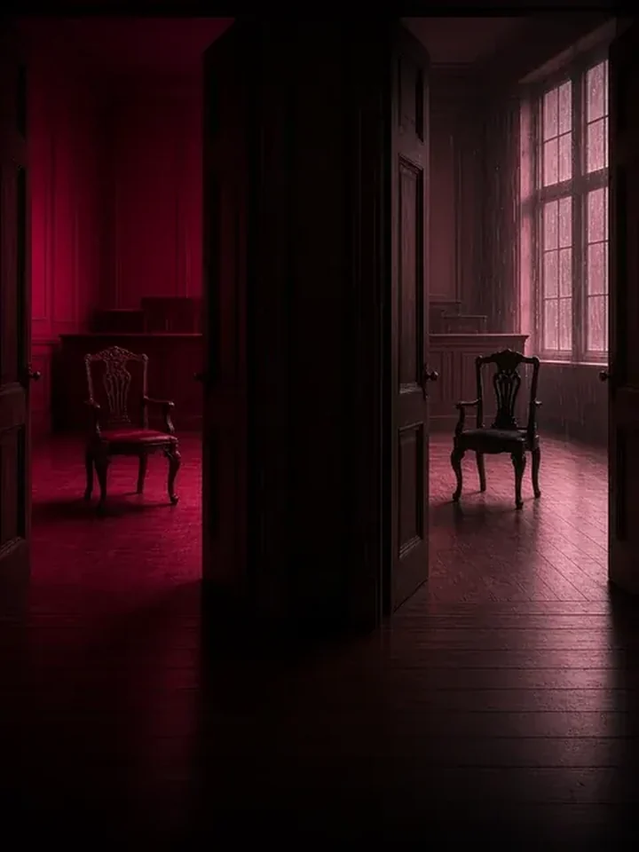

Início / Mundo em Disputa
Mundo em Disputa
A locadora de casos reais da Rede de ProteçãoJulgamentos que dividiram o público, contados como se conta um filme e analisados com a lei na mão. Em cada fita: a cronologia, os dois lados, o que diz a lei, o que mudaria no Brasil e a separação entre o que foi alegado, o que foi decidido e o que está comprovado.

Por Lucas Brito Ladeia · OAB/MA 16.091

Reputação e prova digital
Depp x Heard: o mesmo casamento, dois tribunais e dois veredictos opostos
Um casamento. Dois países. Dois veredictos opostos.
Em Londres, a Justiça concluiu que um jornal podia chamar Johnny Depp de agressor. Na Virgínia, um júri decidiu que Amber Heard o difamou. Como as regras do processo explicam dois resultados opostos, e o que mudaria no Brasil.
Ler a matériaReputação e prova digital
1 fita
Como cada caso é lido
Uma história real tem versões, decisões e provas, e elas não são a mesma coisa. Por isso toda matéria termina separando três camadas e informando a data em que a situação foi conferida.
Alegação
O que cada parte afirma. Pode ser verdade ou não.
Decisão
O que um tribunal decidiu, com o nome do órgão e a data.
Fato comprovado
O que está documentado e não é mais objeto de disputa.